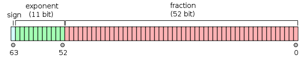

C 変数
変数は、実際にはプログラムが操作できる記憶領域の名前です。C 言語の各変数には特定の型があり、型によって変数が格納するサイズとレイアウトが決まり、その範囲内の値をメモリに格納でき、演算子を変数に適用できます。
変数名は、英字、数字、アンダースコア文字で構成できます。英字またはアンダースコアで始まる必要があります。C は大文字と小文字を区別するため、大文字と小文字は異なります。前の章で説明した基本型に基づいて、次のいくつかの基本的な変数型があります：
| 型 | 説明 |
|---|---|
| char | 通常は1バイト（8ビット）で、整数型です。 |
| int | 整数型、4バイト、値の範囲は -2147483648 から 2147483647 です。 |
| float | 単精度浮動小数点数。単精度は、符号1ビット、指数8ビット、仮数23ビットの形式です。
|
| double | 倍精度浮動小数点数。倍精度は、符号1ビット、指数11ビット、仮数52ビットです。  |
| void | 型が存在しないことを表します。 |
C 言語では、列挙型、ポインタ、配列、構造体、共用体など、他のさまざまな型の変数を定義することもできます。これらについては後の章で説明します。この章では、まず基本変数型を説明します。
C 言語における変数の定義
変数定義は、コンパイラに変数の記憶領域をどこに作成するか、またどのように作成するかを指示します。変数定義はデータ型を指定し、その型の1つ以上の変数のリストを含みます。次に示すとおりです：
type variable_list;
type変数のデータ型を表します。整数型、浮動小数点型、文字型、ポインタ型など、ユーザー定義のオブジェクトでも構いません。
variable_list1つ以上の変数名で構成できます。複数の変数はカンマで,区切ります。変数は英字、数字、アンダースコアで構成され、英字またはアンダースコアで始まります。
以下にいくつかの有効な宣言を示します：
整数型変数の定義：
int age;
上記のコードでは、age は整数型変数として定義されています。
浮動小数点型変数の定義：
float salary;
上記のコードでは、salary は浮動小数点型変数として定義されています。
文字型変数の定義：
char grade;
上記のコードでは、grade は文字型変数として定義されています。
ポインタ変数の定義：
int *ptr;
上記のコードでは、ptr は整数型ポインタ変数として定義されています。
複数の変数の定義：
int i, j, k;
int i, j, k;変数を宣言および定義しますi、j、k、これはコンパイラに、型がintで名前がi、j、kの変数を作成するよう指示します。
変数の初期化
C 言語では、変数の初期化は、変数を定義すると同時に初期値を代入することです。変数の初期化は、定義時に行うことも、後続のコードで行うこともできます。
初期化子は等号とそれに続く定数式で構成されます。次に示すとおりです：
type variable_name = value;
ここで、typeは変数のデータ型を表し、variable_nameは変数の名前、valueは変数の初期値です。
以下にいくつかの例を示します：
int x = 10; // 整型变量 x 初始化为 10 float pi = 3.14; // 浮点型变量 pi 初始化为 3.14 char ch = 'A'; // 字符型变量 ch 初始化为字符 'A' int d = 3, f = 5; // 定义并初始化 d 和 f byte z = 22; // 定义并初始化 z // 声明外部变量 extern int d; extern int f;
後からの変数の初期化：
変数定義後のコードでは、代入演算子=を使用して変数に新しい値を代入できます。
type variable_name; // 变量定义 variable_name = new_value; // 变量初始化
例は次のとおりです：
int x; // 整型变量x定义 x = 20; // 变量x初始化为20 float pi; // 浮点型变量pi定义 pi = 3.14159; // 变量pi初始化为3.14159 char ch; // 字符型变量ch定义 ch = 'B'; // 变量ch初始化为字符'B'
注意すべき点として、変数は使用する前に初期化する必要があります。初期化されていない変数の値は未定義であり、任意のゴミ値が含まれている可能性があります。したがって、不確定な動作やエラーを避けるために、変数を使用する前に初期化することをお勧めします。
変数を初期化しない場合
C 言語では、変数が明示的に初期化されていない場合、そのデフォルト値は変数の型とそのスコープによって異なります。
グローバル変数と静的変数（関数内で定義された静的変数と関数外で定義されたグローバル変数）の場合、デフォルトの初期値はゼロです。
次は、さまざまな型の変数が明示的に初期化されていない場合のデフォルト値です：
- 整数型変数（int、short、long など）：デフォルト値は 0 です。
- 浮動小数点型変数（float、double など）：デフォルト値は 0.0 です。
- 文字型変数（char）：デフォルト値は '\0'、つまりヌル文字です。
- ポインタ変数：デフォルト値は NULL で、ポインタが有効なメモリアドレスを指していないことを示します。
- 配列、構造体、共用体などの複合型の変数：それらの要素やメンバーは、対応する規則に従ってデフォルト初期化されます。これには、要素に対して再帰的にデフォルト規則を適用することが含まれる場合があります。
注意すべき点として、ローカル変数（関数内で定義された非静的変数）は自動的にデフォルト値に初期化されず、それらの初期値は未定義です（ゴミ値を含みます）。したがって、ローカル変数を使用する前に、明示的に初期値を代入する必要があります。
まとめると、C 言語における変数のデフォルト値は、その型とスコープに依存します。グローバル変数と静的変数のデフォルト値は0、文字型変数のデフォルト値は\0、ポインタ変数のデフォルト値は NULL で、ローカル変数にはデフォルト値がなく、その初期値は未定義です。
C 言語における変数の宣言
変数宣言は、コンパイラに対して、変数が指定された型と名前で存在することを保証します。これにより、コンパイラは変数の完全な詳細を知らなくても、さらにコンパイルを続行できます。変数宣言はコンパイル時にのみ意味を持ち、プログラムのリンク時にはコンパイラは実際の変数宣言を必要とします。
変数の宣言には次の2つの場合があります：
- 1つは、記憶領域を確保する必要がある場合です。例：int a宣言した時点で記憶領域が確保されています。
- もう1つは、記憶領域を確保する必要がない場合で、extern キーワードを使用して変数名を宣言し、定義しない場合です。例：extern int aここで、変数aは他のファイルで定義することができます。
がある場合を除き、externキーワードがなければ、すべて変数の定義です。
extern int i; //声明，不是定义 int i; //声明，也是定义
extern の詳細については、次を参照してください：C extern キーワード。
例
次の例を試してください。この例では、変数は先頭で宣言されていますが、定義と初期化は main 関数内で行われます：
例
上記のコードがコンパイルおよび実行されると、次の結果が生成されます：
result 为: 3
あるソースファイル内で、別のソースファイルで定義された変数を参照する必要がある場合、参照するファイル内で変数に extern キーワードを付けて宣言するだけで済みます。
addtwonum.c ファイルコード：
test.c ファイルコード：
上記のコードがコンパイルおよび実行されると、次の結果が生成されます：
$ gcc addtwonum.c test.c -o main $ ./main result 为: 3
C 言語における左辺値（Lvalues）と右辺値（Rvalues）
C 言語には2種類の式があります：
- 左辺値（lvalue）：メモリ位置を指す式は、左辺値（lvalue）式と呼ばれます。左辺値は代入演算子の左側または右側に現れることができます。
- 右辺値（rvalue）：右辺値（rvalue）という用語は、メモリ内の特定のアドレスに格納されている値を指します。右辺値は代入を行うことができない式です。つまり、右辺値は代入演算子の右側には現れることができますが、左側には現れることができません。
変数は左辺値であるため、代入演算子の左側に現れることができます。数値リテラルは右辺値であるため、代入できず、代入演算子の左側に現れることはできません。次は有効なステートメントです：
int g = 20;
しかし、次は有効なステートメントではなく、コンパイル時エラーが生成されます：
10 = 20;その他の拡張
寒欣儿
113***2465@qq.com
参考アドレス
宣言しただけでは、この変数を直接使用することはできません。定義した後に使用できます。
4つ目は3つ目と同じで、外部から使用できるグローバル変数を定義し、初期値を与えます。
混乱しましたか？それらは本当によく似ています。しかし、定義は1か所にしか現れることができません。つまり、int a であれ int a=0 であれ、1回しか現れることができません。一方、extern int a は何度も現れることができます。
グローバル変数を参照する場合、extern int a と宣言する必要があります。このとき extern は省略できません。省略すると int a になり、これは定義であり、宣言ではありません。
寒欣儿
113***2465@qq.com
参考アドレス
寒欣児
113***2465@qq.com
参考アドレス
まとめ：
lvaluesとrvaluesの役割の相互変換
1、式のコンテキストに応じて、lvaluesはrvaluesが必要な場所では自動的にrvaluesに変換されます。例：
2、rvaluesは決してlvaluesに変換できません
寒欣児
113***2465@qq.com
参考アドレス
末烽丶訪
101***7220@qq.com
変数のメモリ・アドレッシング（システムに関連）
(1)メモリ・アドレッシングは大きい方から小さい方へ進み、優先的にメモリアドレスが比較的大きいバイトを変数に割り当てます。そのため、変数が先に定義されるほど、メモリアドレスは大きくなります。 下のコードのように、最初に変数 a を定義し、次に変数 b を定義すると、a のアドレスは 0x7fff5fbff828、b の値は 0x7fff5fbff824 と出力されます。a のアドレスは b のアドレスより4バイト大きいです。
(2)変数アドレスの取得方法：& 変数名。
(3)アドレスの出力方法：%p。
#include <stdio.h> int main() { int a; int b; printf("a的地址是%p\nb的地址是%p\n",&a,&b); return 0; }(4)変数は必ず先に初期化してから使用しなければなりません。C言語では、初期化されていない変数の値は、未知の大きな値になるのがデフォルトだからです。下の例のように、a が初期化されていない場合、a の値は 1606422582 と出力されます。
#include <stdio.h> int main() { int a; printf("a的值是%d\n",a); return 0; }Ethan, zhouyanchun16@163.com の説明
第一点と第四点について、一部の方は実行結果に違いがあるかもしれません：
環境説明：
実際の実行結果では、メモリ・アドレッシングは小さい方から大きい方へ進み、先に定義された値ほどメモリアドレスが小さくなります。変数が初期化されていない場合、デフォルトの出力は 0 です。
末烽丶訪
101***7220@qq.com
royisu
roy***@126.com
lvaluesとrvaluesの役割の相互変換
1、式のコンテキストに応じて、lvaluesはrvaluesが必要な場所では自動的にrvaluesに変換されます。例：
2、rvaluesは決してlvaluesに変換できません
royisu
roy***@126.com
Josin
774***602@qq.com
参考アドレス
C言語標準(C89)ではブール型が定義されていないため、C言語では真偽を判断する際に0を偽、非0を真とします。そのため、通常は次のように論理変数を使用します：
//定义一个int类型变量，当变量值为0时表示false，值为1时表示true int flag; flag = 0; //...... flag = 1; if( flag ) { //...... }しかし、この方法は直感的ではなく、flagが必ずブール値であるとは明確にされていません。そこで、C言語のマクロ定義を利用します：
この方法は直感的ですが、やはり中身は同じで、変数flagはコンパイラから見れば依然としてint型です。
新しいバージョンでは良くない点が改善されることが多いため、最新のC言語標準(C99)でブール型の問題が解決されました。C99は _Bool 型を提供しているので、ブール型は _Bool flag のように宣言できます。
_Bool は依然として整数型ですが、一般の整数型と異なり、_Bool 変数には 0 または 1 のみ代入でき、非0の値はすべて 1 として格納されます。
C99はさらにヘッダファイル <stdbool.h> を提供しており、bool が _Bool を、true が 1 を、false が 0 を表すと定義しています。stdbool.h をインポートするだけで、ブール型を非常に簡単に操作できます。
//导入 stdbool.h 来使用布尔类型 #include <stdbool.h> #include <stdio.h> //计算n!,n的值在main中定义 int main(void) { int n = 10; //计算叠乘数 int sum = 1; //用来存放叠乘的结果 bool flag = false; //叠乘标记 int num = n; //循环次数 while( !flag ) { sum = sum * (num--); //当num=1时结束循环 if( num == 1) { flag = true; } } printf ("%d的叠乘值为 %d \n", n, sum); return 0; }Josin
774***602@qq.com
参考アドレス
Rdd
153***s34s34@qq.com
参考アドレス
グローバル変数とローカル変数のメモリ上の違い
グローバル変数はメモリのグローバル記憶域に保存され、静的ストレージユニットを占有します。ローカル変数はスタックに保存され、所属する関数が呼び出されたときにのみ動的に変数のストレージユニットが割り当てられます。
C言語はコンパイル後にメモリを次のいくつかの領域に分けます：
明らかに、C言語のグローバル変数とローカル変数はメモリ上で違いがあります。C言語のグローバル変数には外部変数と静的変数が含まれ、いずれもグローバル記憶域に保存され、永続的なストレージユニットを占有します。ローカル変数、すなわち自動変数はスタックに保存され、所属する関数が呼び出されたときにのみシステムがスタック上に一時的なストレージユニットを動的に割り当てます。
興味のある読者は、以下のプログラムを実行して、実行結果を分析してみてください。
#include <stdio.h> #include <stdlib.h> int k1 = 1; int k2; static int k3 = 2; static int k4; int main( ) { staticint m1=2, m2; inti=1; char*p; charstr[10] = "hello"; char*q = "hello"; p= (char *)malloc( 100 ); free(p); printf("栈区-变量地址 i：%p\n", &i); printf(" p：%p\n", &p); printf(" str：%p\n", str); printf(" q：%p\n", &q); printf("堆区地址-动态申请：%p\n", p); printf("全局外部有初值 k1：%p\n", &k1); printf(" 外部无初值 k2：%p\n", &k2); printf("静态外部有初值 k3：%p\n", &k3); printf(" 外静无初值 k4：%p\n", &k4); printf(" 内静态有初值 m1：%p\n", &m1); printf(" 内静态无初值 m2：%p\n", &m2); printf("文字常量地址 ：%p, %s\n",q, q); printf("程序区地址 ：%p\n",&main); return0; }Rdd
153***s34s34@qq.com
参考アドレス
極地
160***8722@qq.com
変数は先に定義してから代入すべきです。式の中で、左値は変数でなければならず、右値は変数、定数、または式であることができます。
#include<stdio.h> int main() { int a,b; a=(b=3);//注意左值 等同a=b=3,但是a=(a=b)=3是错误表示 printf("%d\n",a); return 0; }極地
160***8722@qq.com
菜鳥也名
277***4352@qq.com
参考アドレス
変数定義：変数にストレージ領域を割り当て、変数に初期値を指定するために使用されます。プログラム中で、変数の定義はただ一つだけです。
変数宣言：プログラムに変数の型と名前を示すために使用されます。
定義も宣言ですが、extern宣言は定義ではありません。
定義も宣言です：変数を定義するとき、私たちはその型と名前を宣言しています。
extern宣言は定義ではありません：externキーワードを使用して変数名を宣言しますが、定義はしません。
[注意]
変数は使用する前に定義または宣言されていなければなりません。
プログラム中で、変数は一度だけ定義できますが、複数回宣言することはできます。
定義はストレージ領域を割り当てますが、宣言は割り当てません。
菜鳥也名
277***4352@qq.com
参考アドレス
小菜
503***644@qq.com
変数を宣言し、初期化しない、a,bどちらも左値ではない：
変数を宣言し、初期化する、a左値ではなく、1は右値です（もちろんC言語には実は右値という正式な定義はありません）：
代入演算では、a は左値、1 は右値であり、左値と右値はどちらも式です。明らかに宣言の中の変数は式ではありません：
代入演算子の左オペランドは、変更可能な左値でなければなりません：
int a=1; int arr[]={1,2}; a=2; // a是可修改左值 arr={2,3}; // 错误的赋值，arr是不可修改左值（不是因为其转换为指针）小菜
503***644@qq.com